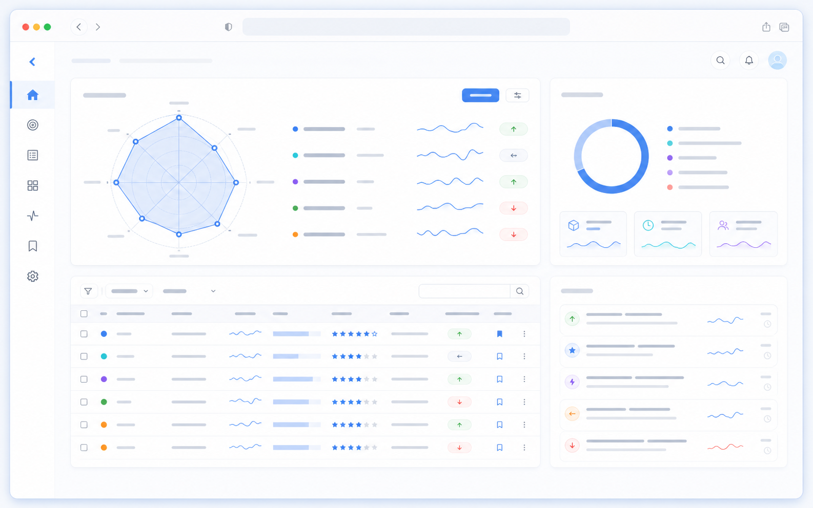
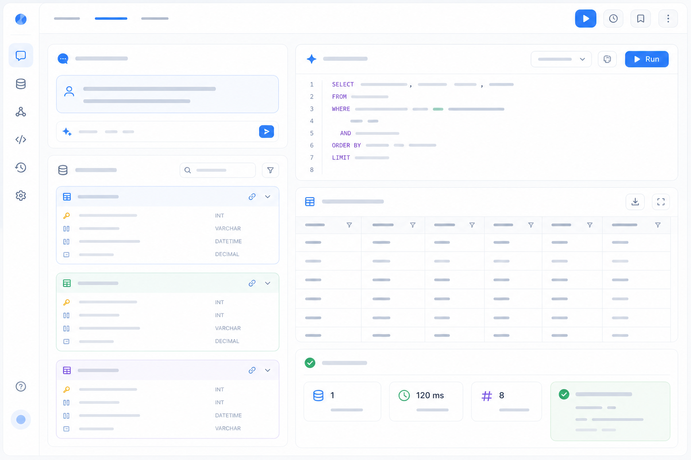

个人项目

Text2SQL
自然语言到 SQL 的数据智能项目，关注 schema linking、SQL 生成、执行校验和结果验证。
- Schema linking：把自然语言问题对齐到真实表结构
- SQL 生成：面向业务查询生成可执行语句
- 结果验证：通过执行反馈检查 SQL 与答案质量
LLM
SQL
Schema Linking
Validation
经历时间轴
Building AgentRadar
围绕周趋势判断重构 AgentRadar，把公开信号、排序理由和证据链组织成可复核的趋势结论。
Text2SQL 项目
围绕自然语言查询、schema linking、SQL 生成、执行校验和结果验证做数据智能工具。
Agent Harness 与验证回路
关注可回放运行、fixtures、schema 检查和 Agent 工作流质量门禁。
Apache InLong 开源贡献
参与 Apache InLong 相关贡献，围绕数据集成框架的代码修复、安全加固和工程质量改进。
搜索推荐方向
围绕候选召回、排序信号、新鲜度和个性化做产品化系统能力沉淀。
技术栈
Agent Systems
Tool Use
Memory
Structured Output
Workflow Design
Harness
Replay
Fixtures
Quality Gates
Observability
Search / Rec
Ranking
Freshness
Scoring
Candidate Gen
Engineering
TypeScript
Node.js
React
PostgreSQL
Java
Python
Contact
联系我
如果你也在关注 AI Agent、Agent Harness、Text2SQL、搜索推荐或数据产品，欢迎交流。